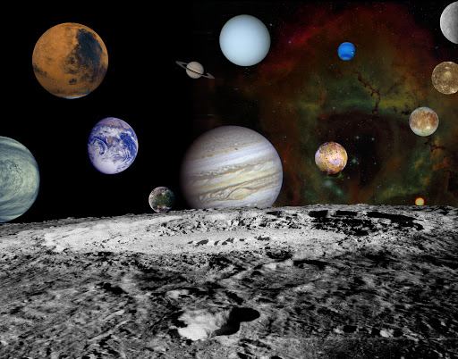

Retrieving beacons from other worlds

You find that if you think hard enough you can retrieve beacons from these worlds
You find that if you think hard enough you can project your beacons to these worlds.
How many worlds are there?
Typically, there’s a nearby dry world that is easy to retrieve and project beacons to, let’s call it the moon. However, you notice other worlds, dimmer, but whoever is on those worlds is projecting beacons to your moon.